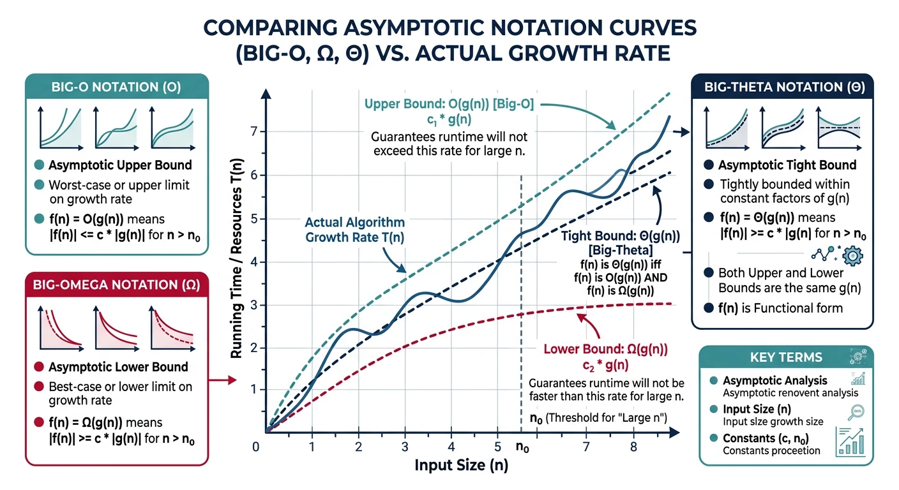

Introduction: Why DSA Matters
Data Structures and Algorithms (DSA) form the core foundation of computer science and software engineering. Whether you're preparing for FAANG interviews, building scalable systems, or solving complex problems, mastering DSA is essential.
flowchart TD
A["1. Foundations
Big-O • Memory Layout
Time & Space Analysis"] --> B["2. Recursion
Call Stack • Memoization
Divide & Conquer"]
B --> C["3. Arrays
Static & Dynamic
Two Pointers • Sliding Window"]
C --> D["4. Strings
Pattern Matching
KMP • Rabin-Karp"]
C --> E["5. Matrices
2D Arrays • Sparse
Traversal Patterns"]
D --> F["6. Linked Lists
Singly • Doubly • Circular
Fast/Slow Pointers"]
E --> F
F --> G["7. Stacks
LIFO • Expression Eval
Monotonic Stack"]
F --> H["8. Queues
FIFO • Deque
Priority Queue"]
G --> I["9. Trees
Binary Trees • Traversals
Expression Trees"]
H --> I
I --> J["10. BST & Balanced
AVL • Red-Black
B-Trees"]
J --> K["11. Heaps & Hashing
Min/Max Heap • Heapsort
Hash Tables"]
K --> L["12. Graphs & DP
BFS • DFS • Shortest Path
Dynamic Programming"]
style A fill:#3B9797,stroke:#132440,color:#fff
style B fill:#3B9797,stroke:#132440,color:#fff
style C fill:#16476A,stroke:#132440,color:#fff
style D fill:#16476A,stroke:#132440,color:#fff
style E fill:#16476A,stroke:#132440,color:#fff
style F fill:#16476A,stroke:#132440,color:#fff
style G fill:#132440,stroke:#3B9797,color:#fff
style H fill:#132440,stroke:#3B9797,color:#fff
style I fill:#132440,stroke:#3B9797,color:#fff
style J fill:#BF092F,stroke:#132440,color:#fff
style K fill:#BF092F,stroke:#132440,color:#fff
style L fill:#BF092F,stroke:#132440,color:#fff
Physical vs Logical Data Structures
Data structures can be classified based on how they are stored in memory (physical) and how they behave logically.
graph TD
DS["Data Structures"]
DS --> Linear["Linear"]
DS --> NonLinear["Non-Linear"]
Linear --> Arr["Array"]
Linear --> LL["Linked List"]
Linear --> Stack["Stack"]
Linear --> Queue["Queue"]
NonLinear --> Tree["Tree"]
NonLinear --> Graph["Graph"]
NonLinear --> Hash["Hash Table"]
style DS fill:#132440,stroke:#132440,color:#fff
style Linear fill:#16476A,stroke:#132440,color:#fff
style NonLinear fill:#3B9797,stroke:#132440,color:#fff
Data Structures
What are Data Structures?
A data structure is a specialized format for organizing, processing, retrieving, and storing data. Think of it like organizing items in a warehouse—different organization methods work better for different purposes.
Why learn this? The right data structure can make the difference between an algorithm that runs in milliseconds vs. one that takes hours!
Physical Data Structures
Physical structures define how data is actually stored in memory:
- Arrays - Contiguous memory allocation, fixed size at creation. Elements stored one after another in memory.
- Linked Lists - Non-contiguous nodes connected via pointers/references, dynamic size. Each node stores data + address of next node.
Logical Data Structures
Logical structures define the behavior and operations, implemented using physical structures:
- Linear: Stack (LIFO - Last In First Out), Queue (FIFO - First In First Out), Deque (Double-ended Queue)
- Non-Linear: Trees (hierarchical), Graphs (interconnected nodes)
- Tabular: Hash Tables (key-value mapping)
Key Insight
A Stack can be implemented using an Array OR a Linked List. The physical structure is the "how", while the logical structure is the "what behavior".
Abstract Data Types (ADT)
What is an ADT?
An Abstract Data Type (ADT) defines what operations can be performed, not how they're implemented. It's like a contract or interface that specifies behavior without implementation details.
Real-world analogy: A TV remote is an ADT—you know pressing "Volume Up" increases volume, but you don't need to know the internal circuitry!
List ADT Operations
insert(index, element)- Insert element at positiondelete(index)- Remove element at positionget(index)- Retrieve element at positionset(index, element)- Update element at positionlength()- Return number of elementssearch(element)- Find element position
Implementations: Can use Array-based (fast access), Linked List-based (fast insert/delete), or Dynamic Array (balanced)
Stack vs Heap Memory
Why Does Memory Matter?
Understanding memory is crucial for writing efficient code and debugging memory-related issues like:
- Stack Overflow - Too many function calls (deep recursion)
- Memory Leak - Forgetting to free allocated memory
- Segmentation Fault - Accessing invalid memory addresses
| Aspect | Stack Memory | Heap Memory |
|---|---|---|
| Allocation | Automatic (compile-time) | Dynamic (run-time) |
| Speed | Very Fast (LIFO pointer) | Slower (search for free space) |
| Size | Limited (typically 1-8 MB) | Large (available RAM) |
| Management | Automatic cleanup | Manual / Garbage Collector |
| Stores | Local variables, function calls | Objects, dynamic arrays |
| Error | Stack Overflow | Out of Memory / Memory Leak |
Memory Management Comparison
| Language | Memory Management | Key Points |
|---|---|---|
| C++ | Manual (new/delete) | Full control, must avoid leaks |
| Java | Garbage Collector | Automatic, but objects may linger |
| Python | Reference Counting + GC | Automatic, handles circular refs |
Static vs Dynamic Memory Allocation
Static Allocation
- Size determined at compile time
- Memory allocated on stack
- Fast but inflexible
- Cannot resize after creation
int arr[100]; // Fixed 100 elements
Dynamic Allocation
- Size determined at runtime
- Memory allocated on heap
- Flexible but requires management
- Can resize (with reallocation)
int* arr = new int[n]; // Size n at runtime
Asymptotic Notations (O, O, T)
Why Asymptotic Notation?
Asymptotic notation describes algorithm efficiency as input size approaches infinity, ignoring constants and lower-order terms.
Why? Actual runtime depends on hardware, language, and implementation. By focusing on growth rate, we can compare algorithms independent of these factors. An \(O(n^{2})\) algorithm will always eventually be slower than \(O(n \log n)\) for large enough n!
The Three Notations
- Big-O (O) - Upper Bound: "At most this much time" (worst case)
- Omega (O) - Lower Bound: "At least this much time" (best case)
- Theta (T) - Tight Bound: "Exactly this order of time" (average case)
Big-O Notation (O) - Upper Bound
Describes the worst-case scenario. "The algorithm takes at most this much time." This is the most commonly used notation in interviews.

Omega Notation (O) - Lower Bound
Describes the best-case scenario. "The algorithm takes at least this much time." Useful for proving minimum required work.
Theta Notation (T) - Tight Bound
When upper and lower bounds match. "The algorithm takes exactly this order of time." The most precise description.
Time Complexity
Time complexity measures how the number of operations grows with input size.
| Complexity | Name | n=10 | n=100 | n=1000 | Example |
|---|---|---|---|---|---|
| \(O(1)\) | Constant | 1 | 1 | 1 | Array access |
| \(O(\log n)\) | Logarithmic | 3 | 7 | 10 | Binary search |
| \(O(n)\) | Linear | 10 | 100 | 1000 | Linear search |
| \(O(n \log n)\) | Linearithmic | 33 | 664 | 9966 | Merge sort |
| \(O(n^{2})\) | Quadratic | 100 | 10,000 | 1,000,000 | Bubble sort |
| O(2n) | Exponential | 1024 | 10³° | 8 | Naive Fibonacci |
Space Complexity
What is Space Complexity?
Space complexity measures how much extra memory an algorithm needs as input size grows. It includes:
- Auxiliary Space: Extra space used by the algorithm (not including input)
- Total Space: Input space + auxiliary space
Analyzing Complexity from Code
Learn to look at code and determine its time/space complexity. These patterns appear constantly in interviews!
Complexity Rules Summary
- Drop constants: O(2n) ? \(O(n)\), \(O(100n^{2})\) ? \(O(n^{2})\)
- Drop lower-order terms: \(O(n^{2} + n)\) ? \(O(n^{2})\), O(n + log n) ? \(O(n)\)
- Sequential operations: O(A) + O(B) = O(A + B) ? O(max(A, B))
- Nested operations: O(A) × O(B) = O(A × B)
- Different inputs, different variables: \(O(n \times m)\), not \(O(n^{2})\)
LeetCode Practice Problems
Practice these foundational problems to solidify your understanding. Solutions provided in Python, C++, and Java!
Easy 1920. Build Array from Permutation
Given a zero-based permutation nums, build array ans where ans[i] = nums[nums[i]].
Analysis: Time \(O(n)\), Space \(O(n)\) - we create a new array of size n.
Easy 2011. Final Value After Operations
Given array of operations, perform ++X, X++, --X, X-- on initial X=0.
Analysis: Time \(O(n)\), Space \(O(1)\) - just iterate and check characters.
Next in the Series
In Part 2: Recursion Complete Guide, we’ll master recursion patterns — the foundation for divide-and-conquer, tree traversals, and dynamic programming that powers the rest of this series.